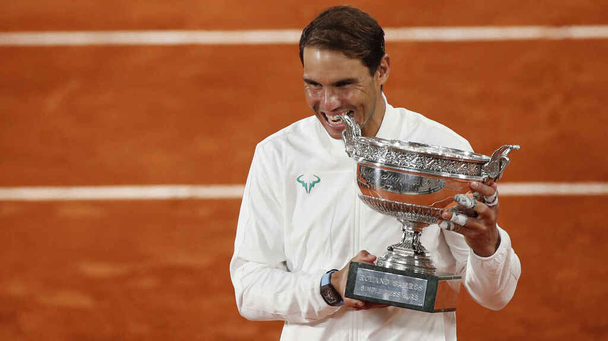
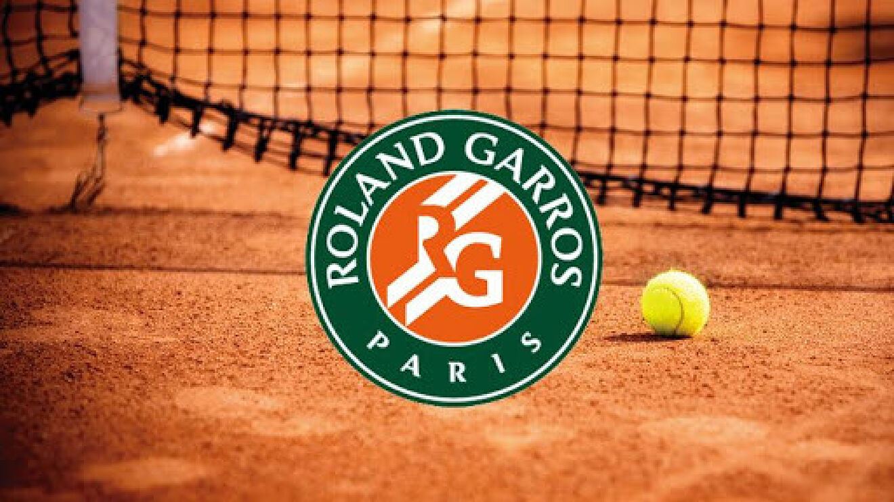

Biografía
|  |
Rafael Nadal Parera (Manacor, Islas Baleares, 3 de junio de 1986),
más conocido como Rafa Nadal, es un tenista profesional español
que ocupa la quinta posición del ranking ATP.
Está considerado como el mejor tenista de toda la historia en pistas
de tierra batida789 y uno de los mejores de todos los tiempos. Hasta
la fecha, es el tenista con mayor número de títulos de Grand Slam en
individuales, con 21, por delante del suizo Roger Federer y del serbio
Novak Djokovic, ambos con 20. Es el tenista masculino más joven de la historia en conseguir el Golden Slam en la carrera, que consiste en lograr los cuatro Grand Slam y la medalla de oro en los Juegos Olímpicos a lo largo de la carrera, logro únicamente compartido con el estadounidense Andre Agassi. |
|
Es un torneo oficial de tenis que conforma el Grand Slam, jugado desde su inauguración en 1891 bajo la organización y el amparo de la Federación Francesa de Tenis (FFT).2 Es el principal torneo celebrado sobre tierra batida en el mundo y el segundo en orden cronológico de los Grand Slams tras el Abierto de Australia. Es a su vez el predecesor del Campeonato de Wimbledon y del Abierto de Estados Unidos y único de los cuatro grandes torneos celebrado sobre esta superficie.2 El tenista que más veces ha ganado el torneo en categoría individual masculina, con trece victorias, es el español Rafael Nadal —durante la era Open—, seguido del francés «Max» Décugis —durante el período anterior y bajo su denominación de Campeonato de Francia—, con ocho triunfos;1112 mientras que la categoría individual femenina se encuentra dominada por la estadounidense Chris Evert quien se proclamó siete veces campeona durante la era Open.13 |
 |